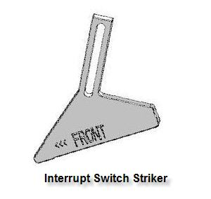
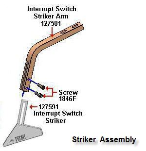
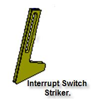
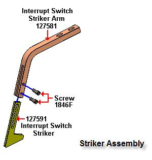
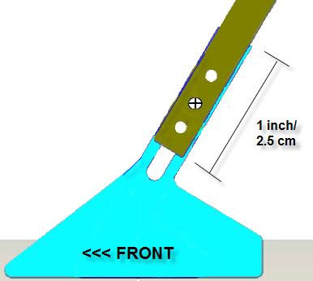
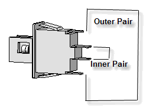

The procedure provides instructions for replacing and aligning the striker on the interrupt switch when the interlock switch, striker, or striker arm is replaced.
Required Materials
Multimeter with clip leads
Ruler
Perform this procedure when one of these parts is replaced:
Interlock switch
Interrupt striker
Interrupt striker arm
Figure 19: Wide-style interrupt switch striker

Figure 20: Wide-style striker assembly

Figure 21: Original interrupt switch striker

Figure 22: Original striker assembly

Open the upper left and right front covers.
Determine the interrupt switch striker configuration.
If striker on the interrupt switch is the new wide style, align the striker on the interrupt switch.
If striker on the interrupt switch is the original style, remove the striker and insert a new striker before aligning.
Remove power from the motors by turning off the switch on the Power Distribution PCB labeled "All DC power (except CPU and reagent coolers)".
Remove the interrupt switch striker.
Note: Both striker assemblies can be removed from the front or the back of the instrument.
Locate the striker.
Remove the two screws attaching the striker arm to the cover.
Caution: Upper Left Cover: When removing screws, take care not to drop tool or screws into the Fluidics Interface PCB. Upper Right Cover: When removing screws, do not open the Card Cage Cover and do not damage the LED DISPLAY PANEL connector.
Remove the striker assembly.
Loosen the two screws on the right side of the striker.
Slide the striker down and remove it.
Insert the striker.
With the striker assembly outside of the instrument, insert the new striker into the interrupt arm and attach the striker with two screws. Do not tighten the screws completely.
Align the interrupt switch striker.
To align the striker using a ruler, begin with the striker assembly outside of the instrument.
Figure 23: Interrupt switch striker measurement

Use the ruler to measure 1.0 in from the end of the interrupt arm to the top of the striker.
Tighten the two screws on the striker.
Install the striker on the cover.
To align the striker without a ruler, first install the striker assembly to the cover.
For a striker attached to upper left cover: Slowly close the cover. Push the striker down from the side of the instrument using your index finger until the striker pushes the interlock switch actuator. Open the cover. Tighten the two screws on the striker.
For a striker attached to upper right cover: Manually adjust the striker down or up. Tighten the two screws on the striker.
Test the interrupt switch striker.
Open the upper left and right front covers.
Locate the interlock switch.
Caution: Do not restore the power to the motors. Do not remove any of the connection wire on the interlock switch.
Attach the multimeter leads to the inner or outer pin pair on the interlock switch.
Figure 24: Interlock switch

Note: The order in which the leads connect to the switch inner or outer pin pair is not important.
Set the multimeter to the resistance setting (Ω). The resistance setting is used for checking continuity or resistance.
Verify the interlock switch is functioning.
Note: If the test fails, replace the interlock switch.
Read the meter without putting any bypass tool on the interlock switch. The meter should read approximately mega Ohms.
Bypass the interlock switch using a red bypass tool, and then read the meter. The meter should read approximately zero Ohms.
Remove the red bypass tool.
Test the interrupt striker.
Open the cover, and check the resistance reading on the meter. The meter should read approximately mega Ohms.
Close the cover, and check the resistance reading on the meter. The meter should read approximately zero Ohms.
If the test fails, realign the striker.
For a striker attached to upper left cover: Loosen the two screws on the interrupt striker. Slowly close the cover. Push the striker down from the side of the instrument using your index finger until the striker pushes the interlock switch actuator. Open the cover. Tighten the two screws on the striker.
For a striker attached to upper right cover: Manually adjust the striker down or up. Tighten the two screws on the striker.
Remove the multimeter leads from the connection pins on the interlock switch.
Restore power to the motors by turning on the switch on the Power Distribution PCB labeled "All DC power (except CPU and reagent coolers)".
Close the upper left and upper right front covers.